==End to End POC Code generation using Entity class This article helps to create a sample application using cobigen.
Prerequisites
Download and install devonnfw IDE here,
Steps to create a Sample Project using Cobigen
The HOW_TO is divided in 2 parts:
-
BE-Back End generator (DB + DAO + services) – CONTRACT FIRST APPROACH
-
FE-Front End generator (Web App Angular + Ionic App) – CONTRACT FIRST APPROACH

So, ready to go! We’re going to start from the BE part …
Back End
run \devonfw-ide-scripts-3.2.4\eclipse-main.bat
It will open eclipse
create a project using below command from the command prompt
devon java create com.example.domain.myappImport the project to eclipse as maven project

Click FINISH
Now We have the following 4 projects.

BEFORE to start to create an Entity class, remember to create the tables !
-
Create a new SQL file (i.e: V0005CreateTables-ItaPoc.sql) inside myapp-__core and insert the following script:
CREATE TABLE EMPLOYEE (
id BIGINT auto_increment, modificationCounter INTEGER NOT NULL,
employeeid BIGINT auto_increment,
name VARCHAR(255),
surname VARCHAR(255),
email VARCHAR(255),
PRIMARY KEY (employeeid)
);WARNING: please note that there are 2 underscore in the name !

-
Now create another SQL file (i.e: V0006__PopulateTables-ItaPoc.sql) and add following script about the INSERT in order to populate the table created before
WARNING: please note that there are 2 underscore in the name !
INSERT INTO EMPLOYEE (id, modificationCounter, employeeid, name, surname,email) VALUES (1, 1, 1, 'Albert','Miller','albert.miller@capgemini.com');
INSERT INTO EMPLOYEE (id, modificationCounter, employeeid, name, surname,email) VALUES (2, 2, 2, 'Wills','Smith', 'wills.smith@capgemini.com');
INSERT INTO EMPLOYEE (id, modificationCounter, employeeid, name, surname,email) VALUES (3, 3, 3, 'Jaime','Thomas', 'jaime.thomas@capgemini.com');
Let’s create the Entity Class for the code generation
-
Create a package employeemanagement.dataaccess.api under the folder myapp-core. Note: It is important to follow this naming convention for CobiGen to work properly.
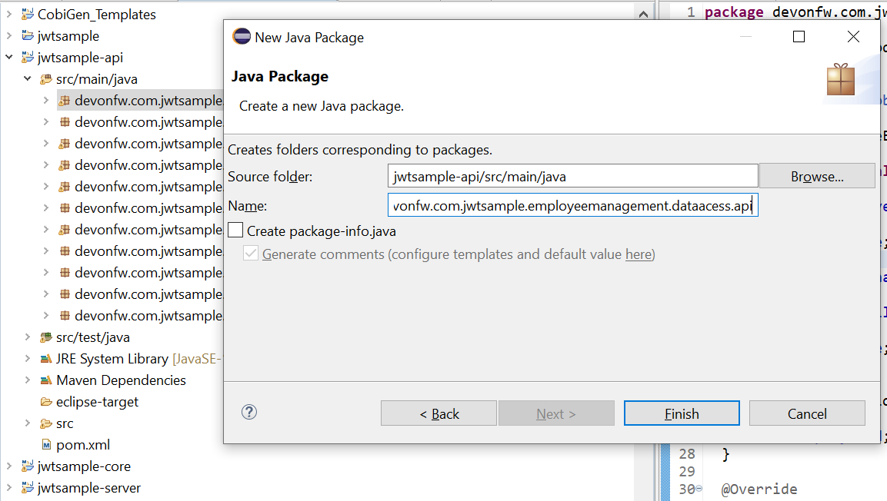
-
Now create a JPA Entity class in this package
import javax.persistence.Entity;
import javax.persistence.GeneratedValue;
import javax.persistence.GenerationType;
import javax.persistence.Column;
@Entity
@javax.persistence.Table(name = "EMPLOYEE")
public class EmployeeEntity {
@Column(name = "EMPLOYEEID")
@GeneratedValue(strategy = GenerationType.IDENTITY)
private Long employeeId;
@Column(name = "NAME")
private String name;
@Column(name = "SURNAME")
private String surname;
@Column(name = "EMAIL")
private String email;
}then generate getters and setters for all attributes …
-
Use Cobigen to generate code. Right click on EmployeeEntity. CobiGen → Generate
It will ask you to download the templates, click on update:

It will automatically download the latest version of CobiGen_Templates.
Attention: If you want to adapt the CobiGen_Templates, (normally this is not neccessary), you will find at the end of this document a tutorial on how to import them and adapt them!
-
Click on all the option selected as below:
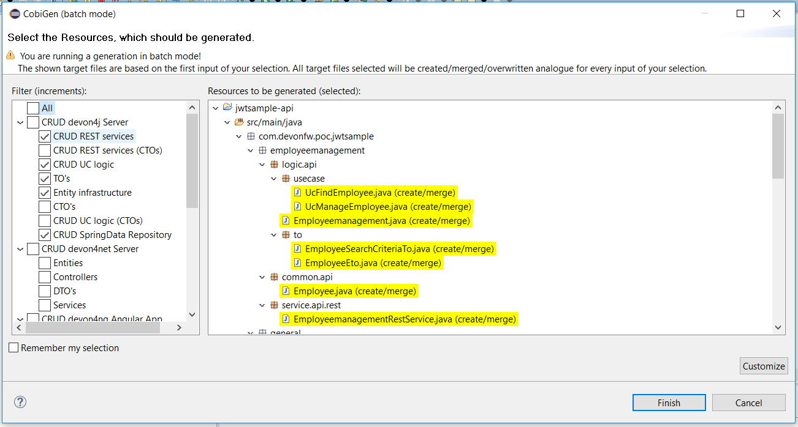
-
Click on finish. Below Screen would be seen. Click on continue

The entire BE layer structure having CRUD operation methods will be auto generated.
Some classes will be generated on the api part (myapp-api), normally it will be interfaces, as shown below:
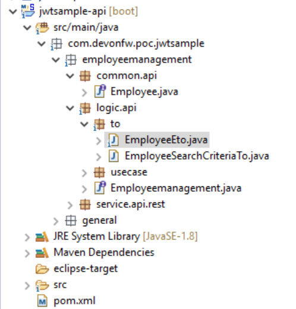
Some other classes will be generated on the core part (myapp-core), normally it will be implementations as shown below:
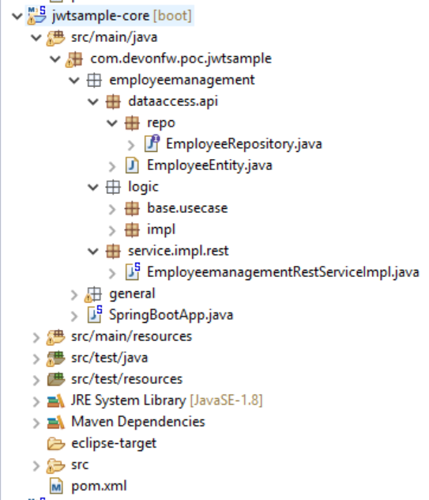
BEFORE to generate the FE, please start the Tomcat server to check that BE Layer has been generated properly.
To start a server you just have to right click on SpringBootApp.java → run as → Spring Boot app

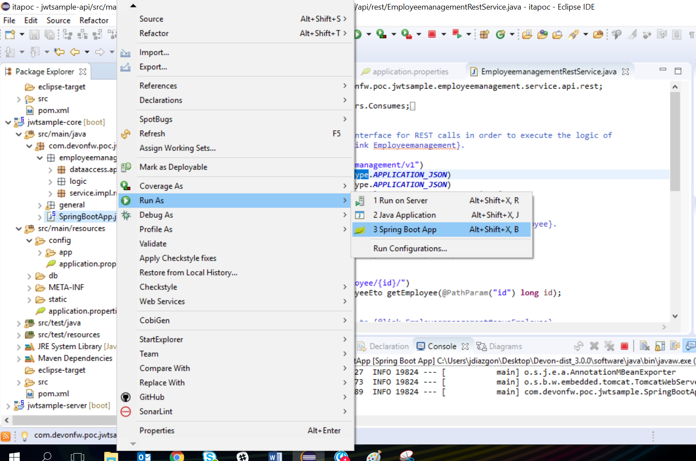

BE DONE
Last but not least: We make a quick REST services test !
See in the application.properties the TCP Port and the PATH
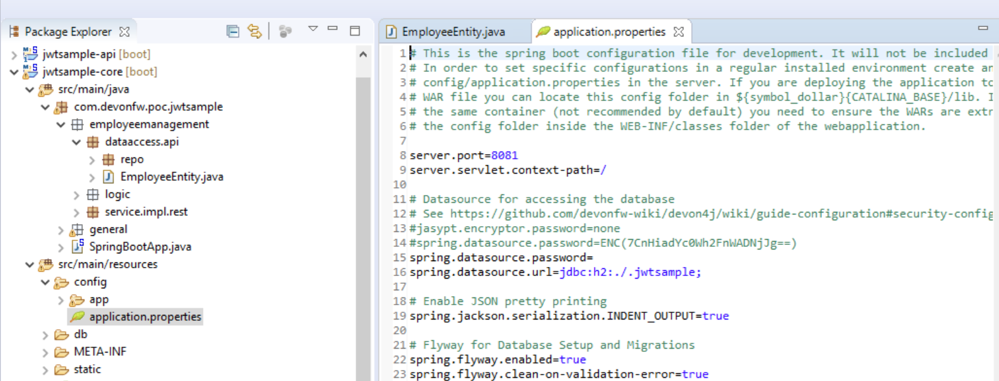
Now compose the Rest service URL:
service class path>/<service method path>
-
<server> refers to server with port no. (ie: localhost:8081)
-
<app> is in the application.propeeties (empty in our case, see above)
-
<rest service class path> refers to EmployeemanagementRestService: (i.e: /employeemanagement/v1)
-
<service method path>/employee/{id} (i.e: for getEmployee method)

URL of getEmployee for this example is:
for all employees
http://localhost:8081/services/rest/employeemanagement/v1/employee/searchfor the specific employee
http://localhost:8081/services/rest/employeemanagement/v1/employee/1Now download Postman to test the rest services.
Once done, you have to create a POST Request for the LOGIN and insert in the body the JSON containing the username and password waiter

Once done with success (Status: 200 OK) …
… We create a NEW GET Request in order to get one employee

Now you can click 
Now you ‘ve to check that response has got Status: 200 OK and to see the below Employee

Now that We have successfully tested the BE is time to go to create the FE !
Front End
Let’s start now with angular Web and then Ionic app.
Angular Web App
-
To generate angular structure, download or clone devon4ng-application-template from
https://github.com/devonfw/devon4ng-application-template

-
Once done, right click on EmployeeEto.java file present under the package com.devonfw.poc.employeemanagement.logic.api.to
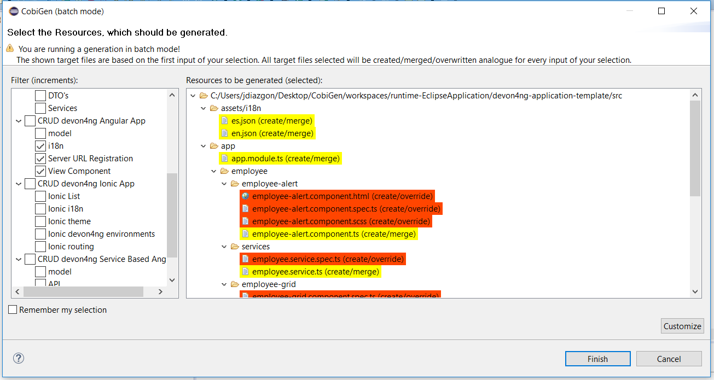
-
Click on Finish

-
The entire ANGULAR structure has been auto generated. The generated code will be merged to the existing.

-
IMPORTANT now you have to add in the app-routing.module.ts file the next content, as a child of HomeComponent, in order to enable the route of the new generated component
,\{
path: 'employee',
component: EmployeeGridComponent,
canActivate: [AuthGuard],
},Following picture explain where to place the above content:

-
Open the command prompt and execute devon yarn install from the base folder, which would download all the required libraries..
-
Check the file environment.ts if the server path is correct. (for production you will have to change also the environment.prod.ts file)

In order to do that it’s important to look at the application.properties to see the values as PATH, TCP port etc …

For example in this case the URL should be since the context path is empty the server URLS should be like:
export const environment = {
production: false,
restPathRoot: 'http://localhost:8081/',
restServiceRoot: 'http://localhost:8081/services/rest/',
security: 'jwt'
};Warning: REMEMBER to set security filed to jwt , if it is not configured already.
-
Now run the ng serve -o command to run the Angular Application.
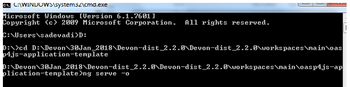
-
If the command execution is successful, the below screen will appear and it would be automatically redirected to the url:
http://localhost:4200/login
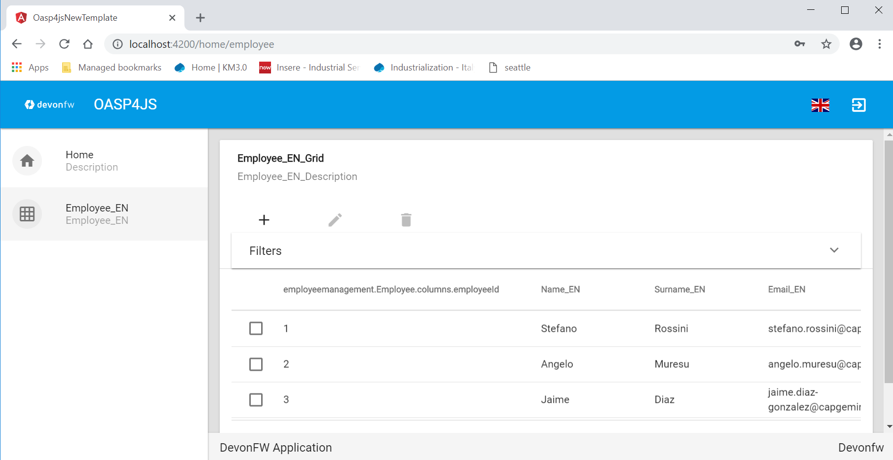
WebApp DONE
Ionic Mobile App
-
To generate Ionic structure, download or clone devon4ng-application-template from
https://github.com/devonfw/devon4ng-ionic-application-template -
Once done, Right click on the EmployeeEto as you already did before in order to use CobiGen.
-
Click on the selected options as seen in the screenshot:

-
Click on Finish
-
The entire ionic structure will be auto generated.

-
Change the server url (with correct serve url) in environment.ts, environment.prod.ts and environment.android.ts files (i.e: itapoc\devon4ng-ionic-application-template\src\environments\).
The angular.json file inside the project has already a build configuration for android.

-
Run npm install in the root folder to download the dependecies
-
Run ionic serve

-
Once the execution is successful

-
Mobile App DONE*
So: well done
Starting from an Entity class you’ve successfully generated the Back-End layer (REST, SOAP, DTO, Spring services, Hibernate DAO), the Angular Web App and the Ionic mobile App!
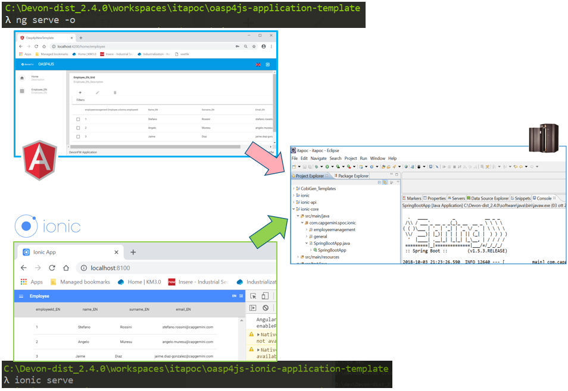
Build APK
Since We’re going to create apk remember the following pre-conditions:
-
Now, open cmd and type the path where your devon4ng-ionic-application-template project is present.
-
Run the following commands:
-
npx cap init
-
ionic build --configuration=android
-
npx cap add android
-
npx cap copy
-
npx cap open android
-
-
Build the APK using Android studio.


You can find your apk file in
/devon4ng-ionic-application-template/android/app/build/outputs/apk/debug
Adapt CobiGen_Templates
After following this tutorial, you will have the CobiGen_Templates downloaded on your local machine. To import these templates you need to do the following:
Right click in any part of the package explorer, then click on CobiGen → Adapt templates

Click Ok:

Now the CobiGen_Templates project will be automatically imported into your workspace, as shown on the image below:


Now you just need to change the Java version of the project to JRE 1.8. Right click on the JRE system library, and then on Properties:
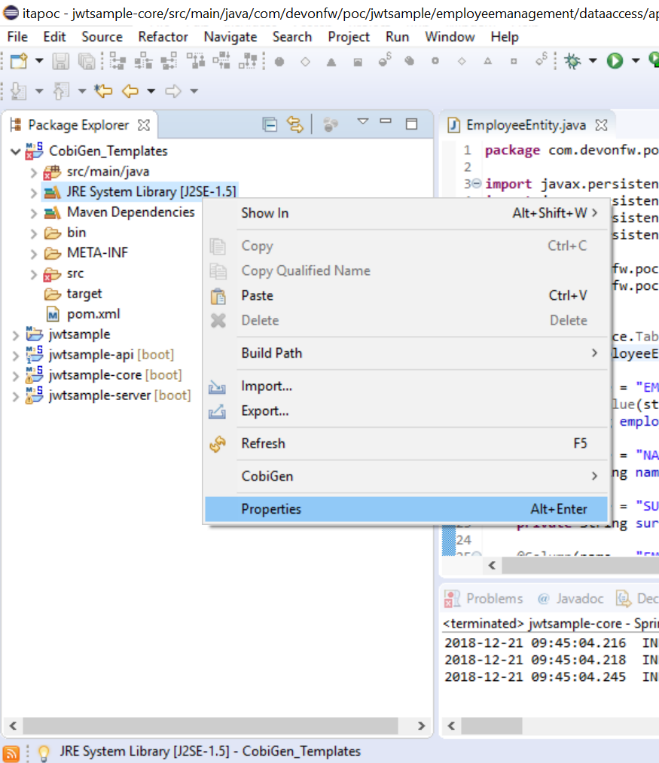
Now change the version to Java 1.8

Now you have successfully imported the CobiGen templates. If you want to edit them, you will find them in the folder src/main/templates. For instance, the Java templates are located here:

Now you can adapt the templates as much as you want. Documentation about this can be found on:
https://github.com/devonfw/tools-cobigen/wiki/Guide-to-the-Reader